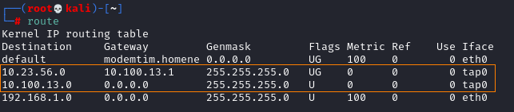
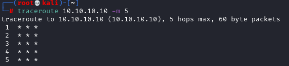
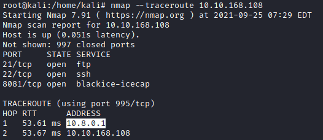

Network Tracing
In this phase we have to determine the network topology and draw a
network map
RouteUseful to find the default gateway for a host,

TracerouteUseful to understand which path takes the packets to arrive to a
host
Does not work if the default gateway is blocking ICMP packets (like below)
traceroute 10.10.10.10 -m 5

Zenmap
https://nmap.org/book/zenmap-topology.htmlInstallation:
To run the scan we can select the profile
Regular ScanNow we can go to the tab
Topology and we should see the topology graph.
The topology view is most useful when combined
with Nmap's --traceroute option, because that's the option that discovers the network path to a
host
Command Line:
nmap -O -A 192.168.1.0/24 --traceroute
It take a lot time,
another option faster than reaceroute all
the network is to traceroute only the Ip Addresses that we know that are alive
nmap [ipAddress1] [ipAddress2] --traceroute

EtherApe
run
For other commands see the chapter
Post
Exploitation: mapping the internal network